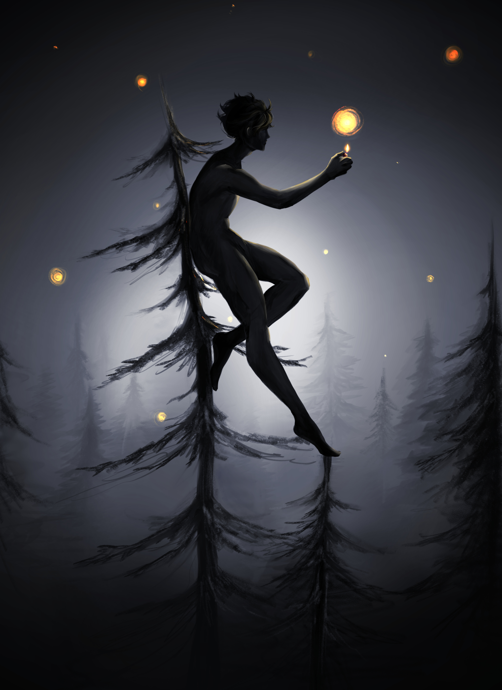
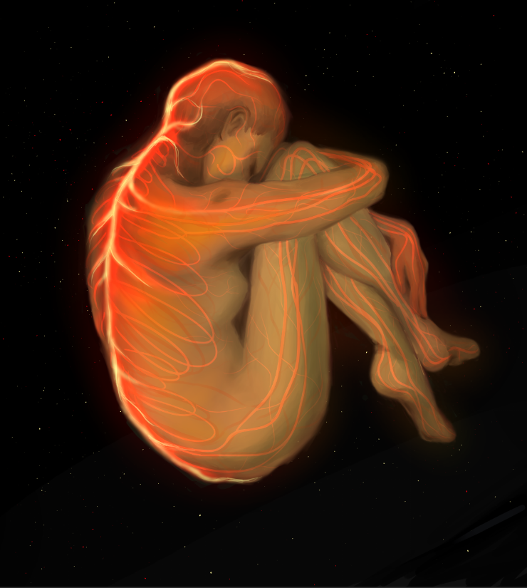
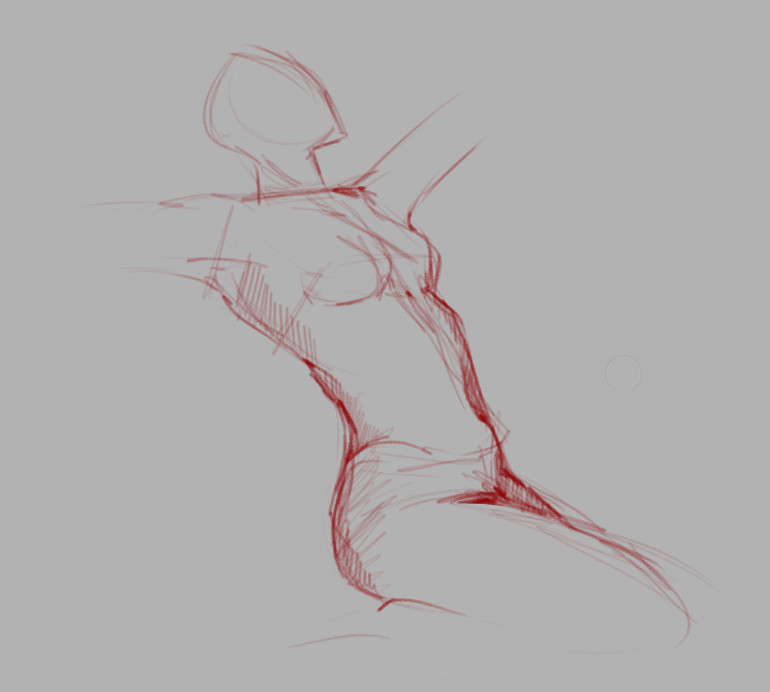
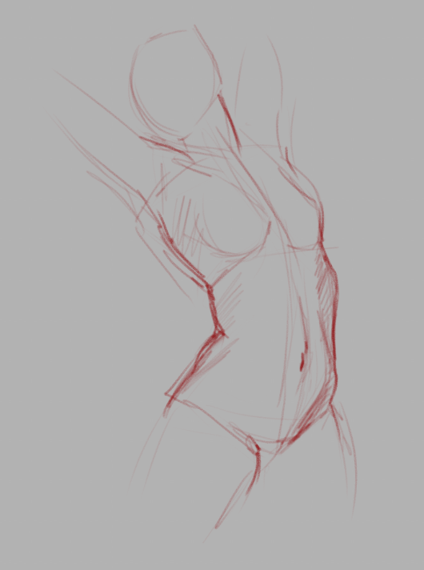
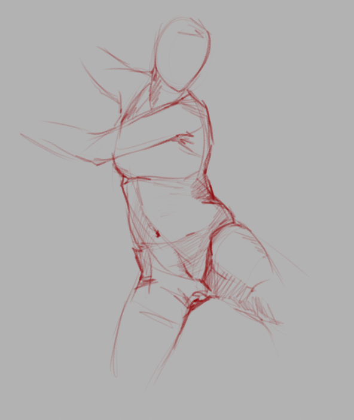
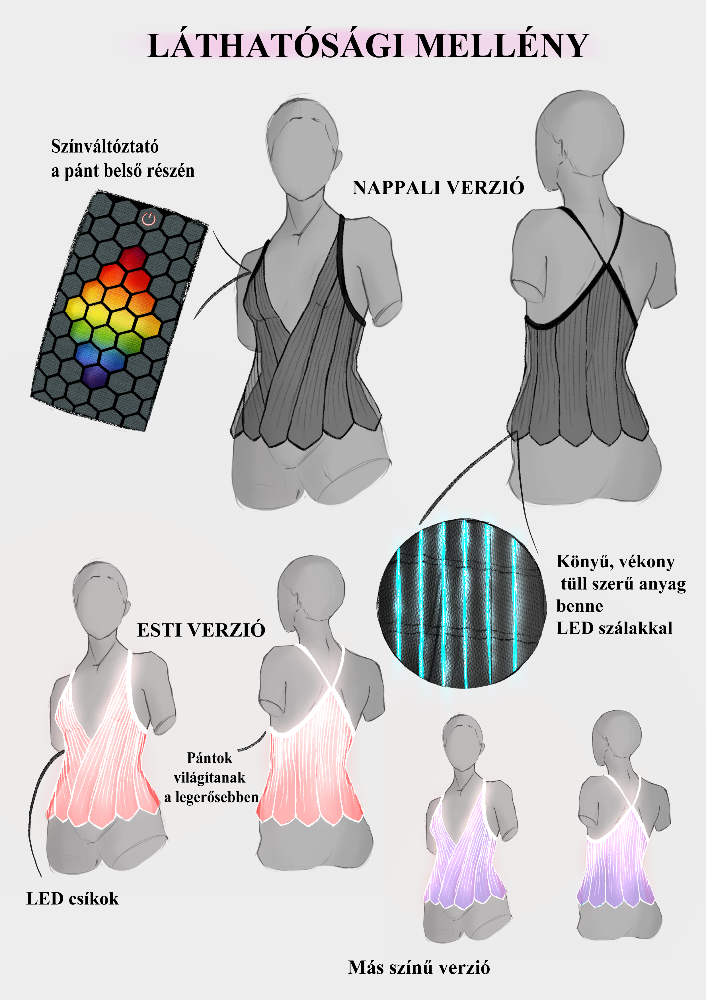

A galéria egy átfogó gyűjtemény eddigi munkáimból.
Célja minél szélesebb körben bemutatni képességeimet.
FantáziaképCsillagbölcső Clip Studio Paint: International Illustration Contest versenyre

Illusztráció Kányádi Sándor : Valaki jár a fák hegyén verséhez

Bolygó születése Illusztráció saját történethezIllusztráció Babits Mihály : A gólyakalifa regényéhez

Anatómia gyakorlat

Anatómia gyakorlat

Anatómia gyakorlat

Tárgytervezés MOME: Ugrás a jövőbe versenyéreTárgytervezés MOME: Ugrás a jövőbe versenyére